犬庫欣氏症：藥物監測與替代療法
主講：Andrew Bugbee, DVM, DACVIM｜Texas A&M 首席醫療長（CMO）、臨床教授
2026 年 10 月 7 日｜VET-KU × Texas A&M 內科研討會｜場次 13
🎧 聆聽課堂錄音（Plaud）↗⭐ 必記原則
- 臨床症狀和臨床評分是最重要的監測工具，數字只是輔助
- Trilostane 約 1 mg/kg q12h、隨餐給、盡量避免調劑藥
- 第 10–14 天回診只看有沒有壓過頭，不加藥；30 天後才調整
- 每次刺激試驗都在同一個給藥後時間開始
- 監測刺激試驗一定要抽刺激前：約 1/4 會是 Δ 不變或負值
- 控制良好：給藥前皮質醇每 6–12 個月一次；≥ 1.45 大致排除壓過頭
- 有症狀：做 ACTH 刺激試驗，依數值加藥、找其他原因或減藥
- 低皮質醇症 4 年內約 26%；約 25% 永久無法恢復
- 沒有在診斷時處理的共病，控制後一定要回頭複查
- 垂體切除術要主動告知飼主，拒絕也寫進病歷
- 放射治療是治腫瘤，不是治庫欣
- 替代藥物中，cabergoline、視黃酸可能減緩或縮小垂體腫瘤
核心觀念與總覽
▾🎤 場次資訊
🎤 治療總覽：依 HPA 軸上的作用位置分類
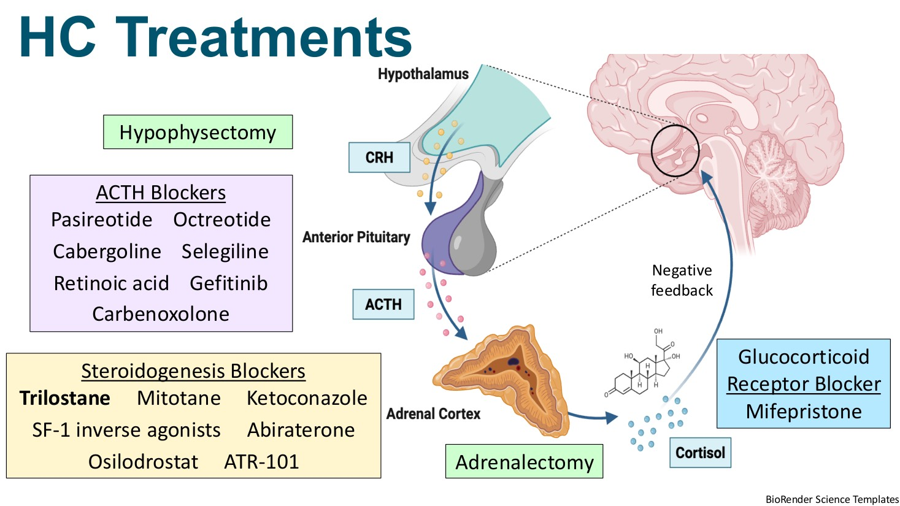
| 類別 | 作用位置 | 藥物或方法 |
|---|---|---|
| ACTH 阻斷劑 | 垂體 | Pasireotide、Octreotide、Cabergoline、Selegiline、視黃酸、Gefitinib、Carbenoxolone |
| 類固醇合成阻斷劑 | 腎上腺 | Trilostane、Mitotane、Ketoconazole、SF-1 反向促效劑、Abiraterone、Osilodrostat、ATR-101 |
| 糖皮質素受體阻斷劑 | 標的組織 | Mifepristone |
| 手術 | 垂體／腎上腺 | 垂體切除術、腎上腺切除術 |
| 放射治療（p.19 打了三個問號） | 垂體 | 見第 12 節 |
💡 補充 與其他場次的關聯
- 診斷、trilostane 劑量與停藥原則、P:B ratio：見 12 犬庫欣氏症：診斷與內科治療。
- 醫源性 Addison、ACTH 刺激試驗判讀、DOCP：見 11 犬 Addison 氏症。
- 庫欣合併糖尿病、胰島素阻抗：見 02 犬糖尿病與胰島素。
- 中樞性尿崩症與 DDAVP（垂體切除術後）：見 01 PU/PD。
1. 為什麼庫欣讓人挫折
▾🎤 獸醫、飼主、病患三方的困難
獸醫
- 診斷有難度
- 沒有標準的治療與監測流程；共識之間也常不一致
- 飼主順從度、治療相關問題要排除
飼主
- 約 40% 表示照顧庫欣犬讓自己的生活品質變差
- 約 25% 低估所需的費用、時間與心力
- 藥和監測都貴；覺得治療只「輕微」改善狗的生活品質
病患
- 「拜託快把我治好！」
- 藥物副作用、低皮質醇症
- 生活品質與壽命
🎤 飼主花了好幾年的時間、心力和錢，在他們心中卻沒有得到相對應的回報。講者的問題是：改進診斷、治療或監測，能不能減少獸醫的挫折，並改善病患和飼主的結果？
🎤 庫欣臨床評分（ESVE Project ALIVE）
- 可以在歐洲獸醫內分泌學會（ESVE）網站的 ALIVE 頁面取得。
- 分數 0–15；最好在診斷時就開始評分，作為之後監測的基準。
- 每次回診都評一次；目標是分數越低越好，但不能造成低皮質醇（Addison）的症狀。
- 🎤 整場的主軸：臨床症狀監測是工具箱裡最重要的工具；評分讓它變得客觀、可量化、可標準化。
2. 分類與食物依賴型庫欣
▾ACTH 依賴型（約 85%）與非依賴型（約 15%）
非依賴型中有一種罕見的食物依賴型 HC，報告多見於較年輕的犬（2–6 歲）。
健康狀態
- 進食時胃腸分泌 GIP
- GIP 結合胰臟受體，胰島素上升
食物依賴型 HC
- 進食時分泌的 GIP 結合腎上腺上異常表現的受體
- 結果是皮質醇上升
診斷
- 餐後 UCCR 上升 50–100%。
- ACTH 刺激試驗如果在餐後太久才做，可能抓不到皮質醇上升。
- Octreotide 可以抑制餐後的皮質醇上升（它會阻斷 GIP 分泌，見第 17 節）。
治療
餐前 2–3 小時給 trilostane，讓藥效高峰對上餐後的皮質醇高峰。
3. Trilostane（Vetoryl®）用法
▾🎤 機轉與劑量
- 3β-HSD 抑制劑（也作用在 11β-HSD），美國 FDA 核准。
- 仿單劑量 2.2–6.7 mg/kg q24h，比多數專科醫師實際用的高。
- 講者的做法：約 1 mg/kg q12h。🎤 實際上會往下取整數，配合最接近的膠囊規格，和 Tardo 的 0.5–1 mg/kg 差不多。
- 隨餐給效果最好。
- 膠囊規格：5、10、30、60、120 mg。
- 🎤 美國只有膠囊。2025 年英國推出有調味、可切成四等分的錠劑（20、30、60 mg），劑量選擇更有彈性，各種體型都比較好給。
🎤 盡量避免調劑藥
- 研究中 40% 的調劑批次含量不合格：劑量不準，溶離特性和生體可用率也會改變。
- 🎤 Trilostane 是不太適合調劑的藥。但調劑比原廠便宜，有時還是不得不用。
- 🎤 講者會先告訴飼主：用調劑藥時，控制狀況常常時好時壞，會間歇出現皮質醇過多的症狀。
4. 開始 trilostane 後的回診時程
▾🎤 三個時間點
| 時間點 | 目的 | 可以做的調整 |
|---|---|---|
| 第 10–14 天 | 唯一目的：確認皮質醇沒有壓過頭 | 壓過頭可以減藥；不加藥 |
| ≥ 30 天 | 評估控制狀況 | 未控制可以加藥 |
| 每次改劑量後 10–14 天 | 看調整的效果，確認沒有壓過頭 | 重複直到控制穩定 |
- 🎤 講者說美國很多獸醫沒有照這些時間點回診，問題常常就發生在這裡。
- 🎤 第 10–14 天的回診是在「保護自己」：庫欣的檢查不完美，一定會有偽陽性。如果狗其實不是庫欣，這時就會被壓過頭。及早發現，才不會破壞腎上腺、造成 Addison 甚至死亡。
- 🎤 第 10–14 天時狗還有症狀、皮質醇也還不正常，沒關係。Trilostane 的完整效果要約 30 天才出現，所以 30 天前不加藥。
🎤 每次回診要監測什麼
- 臨床症狀／臨床評分（最重要）。🎤 講者根據症狀做決定的機會，遠多於根據任何皮質醇數值。「一定要問症狀。」
- ACTH 刺激試驗：
- 在給藥後 2–4 小時開始，整個試驗在給藥後 6 小時內完成。
- 可以用 1 µg/kg 的合成 ACTH（診斷時用 5 µg/kg），在美國可以省下不少費用。
5. 治療目標與 Δ cortisol
▾🎤 治療目標
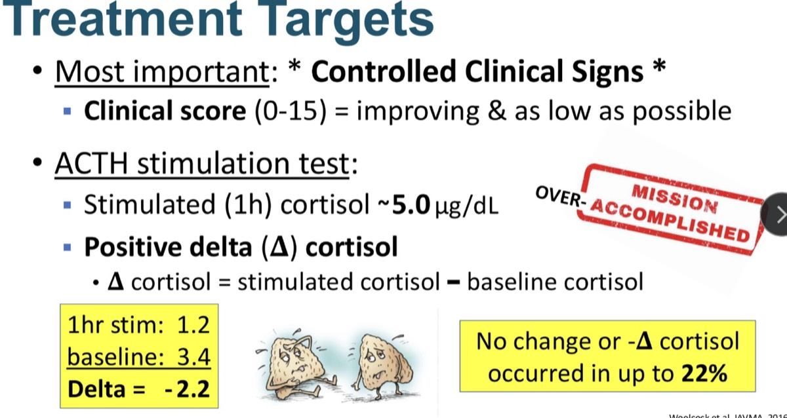
- 最重要：臨床症狀受到控制。臨床評分持續改善、越低越好，但不能出現腎上腺功能低下的症狀。
- ACTH 刺激試驗：
- 刺激後 1 小時皮質醇約 5.0 µg/dL。🎤 有一個可以容忍的範圍，要看臨床控制得多好來判讀。
- Δ cortisol 要是正值（Δ = 刺激後 − 刺激前）。
🎤 Δ 不變或負值：最多 22%（Woolcock 2016）
- 範例：刺激後 1 小時 1.2、刺激前 3.4，Δ = −2.2。
- 🎤 講者回應早上的提問「刺激前比刺激後高怎麼辦」：除非狗在開始試驗時非常緊張，否則這代表可能控制過頭，trilostane 劑量太高。Woolcock 研究中的狗開始試驗時並不緊張。
- 🎤 研究中有一隻狗刺激前 5.8、刺激後也是 5.8（Δ = 0）。皮質醇數字看起來正常，但臨床上完全是 Addison。
- 🎤 所以常被問「監測時為什麼一定要抽刺激前？」就是這個原因。少了這一管，約 1/4 的狗可能被誤判。
- 🎤 講者團隊做的內科專科醫師問卷：超過 65% 看到 Δ 為負值或不變時，會判讀為壓過頭，選擇停藥或減藥。
✍️ 筆記 老師：刺激前比較高，可能是「前面緊張、後面放鬆」
- 0 分鐘採血時最緊張：剛到醫院、被保定、被抽血，壓力讓內生性 ACTH 上升，把皮質醇推高，所以刺激前偏高。
- 等待的一小時慢慢放鬆：壓力造成的 ACTH 高峰消退，皮質醇被代謝掉。
- 外源 ACTH 也推不上去：腎上腺被 trilostane 擋住，儲備很少；試驗又剛好落在給藥後藥效最強的時段。
6. 控制穩定之後與低皮質醇症
▾🎤 控制好了，然後呢？
- 臨床症狀和評分仍是最好的監測工具，所有決策都應以它為主。
- 多數內分泌專科醫師仍建議每年 1–2 次某種形式的皮質醇監測（每 6–12 個月），主要是篩檢低皮質醇症，因為它可能沒有症狀，只能靠檢查發現。
- 選項：ACTH 刺激試驗，或給藥前皮質醇（pre-pill cortisol）。
- 🎤 控制良好的狗，講者不會每 1–3 個月叫回來做刺激試驗。只有出現未控制的症狀時才叫回來調劑量，平常就是一般的年度檢查。
🎤 低皮質醇症真的會發生
| 項目 | 內容 |
|---|---|
| 發生率 | 2 年內約 15%，4 年內約 26% |
| 症狀 | 約 33% 沒有症狀；有症狀時也很模糊，最常見精神差、食慾下降 |
| 和劑量的關係 | 常常和 trilostane 劑量或用藥時間無關 |
| 相關因素 | 常合併其他疾病，可能影響狗對 trilostane 的敏感度 |
| 處理 | 暫時停藥（drug holiday）和／或降劑量後再開始 |
| 預後 | 約 75% 在 6 個月內恢復；🎤 約 25% 永久停留在 Addison 狀態 |
- 🎤 有些狗恢復後不需要再吃 trilostane，這可能是最好的結果。
- 🎤 這些狗不是全部在影像上看得到腎上腺出血，很多腎上腺看起來正常。所以原因不一定是出血，尤其是能恢復的那些。
- 🎤 目前有研究在看腸胃道健康是否會影響 trilostane 的反應（見第 18 節）。
✍️ 筆記 真的發生 Addison，可能就無法逆轉
| 可逆（多數） | 不可逆（約 1/4） | |
|---|---|---|
| 機轉 | Trilostane 只是暫時擋住酵素 | 腎上腺皮質壞死或凋亡 |
| 病程 | 停藥後數週到數月恢復 | 永久腎上腺功能低下，終身補充 |
💡 補充 比較可能是永久性的線索
- 出現高血鉀、低血鈉：連礦物皮質素也缺，表示球狀帶也受損。
- 停藥後追蹤刺激試驗（例如每 4–6 週一次），皮質醇一直不回升。
- 停藥好幾個月，仍要靠類固醇補充維持。
💡 補充 處置
- 停 trilostane。
- 有症狀時補充生理劑量 prednisolone；危象依 Addison crisis 處理。
- 電解質異常時加 DOCP 或 fludrocortisone（見 11 Addison）。
- 定期複驗：恢復了就觀察庫欣是否復發，必要時以較低劑量重新開始；沒恢復就當永久 Addison 管理。
💡 補充 Mitotane 是溶解腎上腺的藥，造成永久 Addison 的機會更高（第 10 節）。
7. ACTH 刺激試驗 vs 給藥前皮質醇
▾🎤 用 ACTH 刺激試驗監測
- 原廠建議：維持臨床控制，並每 3 個月做一次刺激試驗，刺激後 1 小時皮質醇目標 1.45–9.1 µg/dL。
- 對刺激試驗的疑慮：
- 過去美國以外地區難以取得合成 ACTH。🎤 尤其歐洲曾經缺貨，連刺激試驗都做不了，才推動了不需要 ACTH 的替代方法。
- 連續檢測的結果變異大，很難前後比較。
- 和臨床症狀相關性差。
🎤 為什麼刺激試驗和症狀對不起來？
🎤 講者認為和皮質醇（cortisol）轉成 cortisone 有關。皮質醇是活性形式，會結合糖皮質素受體、造成症狀；cortisone 是沒有活性的代謝物。
- 有報告指出 trilostane 會加速皮質醇轉成 cortisone，所以皮質醇下降的幅度遠大於 cortisone。
- 刺激試驗沒有測 cortisone，所以可能皮質醇很低，狗卻仍有症狀。
- 可能的原因：
- 腎上腺以外的組織加速轉換？
- Trilostane 擋住酵素後堆積的前驅物，影響了轉換速率？
- Trilostane 和 ACTH（外源或內生）都會影響 11β-HSD。在羊的細胞實驗中，兩者會活化第 2 型（皮質醇 → cortisone 的方向）。
- 🎤 狗和人對 trilostane 和 ACTH 的反應不同，目前有很多研究在找各物種的原因。
💡 補充 組織中的 11β-HSD1 可以把 cortisone 再轉回皮質醇，所以血中皮質醇低，不代表組織層級沒有糖皮質素作用。
🎤 給藥前皮質醇（pre-pill cortisol）
- 在下一劑 trilostane 該給的時間採血。劑量固定時，結果隨時間的變異比刺激試驗小。
- Ramsey 團隊的研究建議範圍：1.45–5.0 µg/dL。
- 🎤 時間很重要：飼主早上 6 點給藥、門診卻排在 10 點，結果就會受影響。可以請飼主在回診前幾天把給藥時間調到門診時間，或乾脆固定在早上第一個門診時間（例如 8 點）給藥。
研究的限制
- 「控制良好或不佳」是依飼主回報的症狀判定。
- 比較不著重偵測低皮質醇。🎤 有些被歸為「控制良好」的狗，刺激後 1 小時皮質醇只有 0.25，講者認為這其實是控制過頭。
- 可能漏掉：無症狀的低皮質醇症，以及 Δ 為負值的狗。
8. 講者怎麼監測 trilostane
▾🎤 監測流程
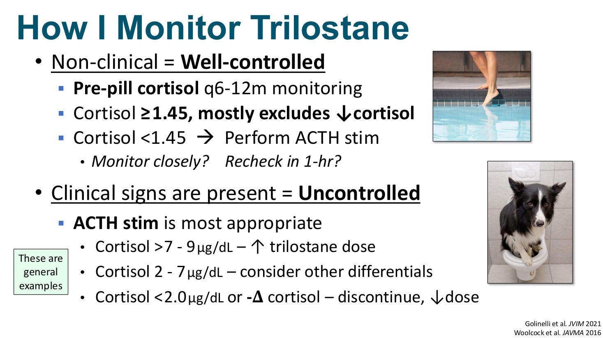
沒有症狀 = 控制良好
- 給藥前皮質醇，每 6–12 個月一次（「試試水溫」）
- ≥ 1.45：大致排除壓過頭
- < 1.45：不代表一定壓過頭，但也不能排除，要做 ACTH 刺激試驗，或密切觀察、1 小時後再測
有症狀 = 未控制
- ACTH 刺激試驗最合適
- > 7–9 µg/dL：增加 trilostane
- 2–7 µg/dL：考慮其他鑑別診斷
- < 2.0 µg/dL 或 Δ 為負值：停藥或減藥
- 🎤 早上有人問院內皮質醇檢驗。用給藥前皮質醇監測時，院內檢驗很有用：拿到 < 1.45 的結果，可以當場再測或直接做刺激試驗，同一次門診就有答案，不必外送再叫回來。
- 🎤 有症狀時刺激試驗最好，因為它不只告訴你哪裡不對，也告訴你怎麼修正，以及加藥是否安全。Addison 的某些症狀（例如 PU/PD）也會和皮質醇過多很像。
- 以上數值只是一般性範例；刺激後的數字要依狗的臨床狀況來判讀。
🎤 我的方法比你的好嗎？
講者最喜歡的研究之一（Bermejo 2021）比較了多種監測方法，沒有哪一種比較好。投影片的結語：「我們其實都是邊做邊想出來的！」
9. 別忘了共病
▾🎤 常見共病與處置
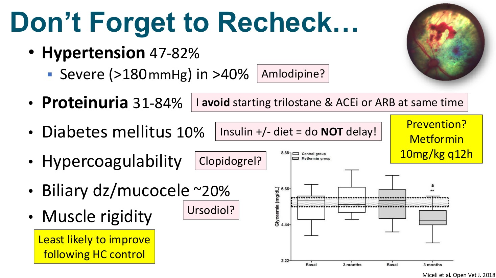
| 共病 | 比例 | 講者做法 |
|---|---|---|
| 高血壓 | 47–82%；> 40% 為重度（> 180 mmHg） | 🎤 只在診斷時就是重度才治療（amlodipine?）。多數在皮質醇控制後至少會稍微改善，太積極用 enalapril 可能在控制後造成低血壓。 |
| 蛋白尿 | 31–84% | 避免同時開始 trilostane 和 ACEi／ARB。🎤 先開始 trilostane，初期回診蛋白尿仍持續，再加 ACEi 或 ARB（如 telmisartan）。 |
| 糖尿病 | 約 10% | 胰島素 ± 飲食，不要拖。🎤 診斷庫欣時已有糖尿病，多半是永久性的；庫欣通常是把狗推過門檻的那一步。 |
| 預防糖尿病？ | Metformin 10 mg/kg q12h。🎤 有一個研究用在庫欣犬，對預防糖尿病有正面效果，可以考慮。 | |
| 高凝血 | Clopidogrel?🎤 相對安全、不太會傷害病患，尤其是血小板數達百萬以上時。 | |
| 膽道疾病／黏液囊腫 | 約 20% | Ursodiol?🎤 尤其是 Sheltie 等好發品種，可以當預防或延緩進展。 |
| 肌肉僵直 | 控制庫欣後最不容易改善。🎤 診斷時走路像木樁腿，之後大概一輩子都是。要先降低飼主的期待。 |
🎤 Trilostane 和 ACEi／ARB 要當成 NSAIDs 看待
- 和 Tardo 說的一樣：狗不吃或生病時，這些藥全部先停，繼續給副作用風險會大幅上升。
- 它們的副作用重疊很多。同時開始，狗出現腸胃不適時，分不出是哪個藥造成的。
🎤 最常犯的錯
✍️ 筆記 老師覺得可以加 clopidogrel，因為副作用還好
- 庫欣犬容易高凝血（凝血因子與纖維蛋白原上升、抗凝血酶下降、血小板活性增加），最怕的是肺栓塞。
- Clopidogrel 副作用少（偶爾腸胃不適，嚴重出血少見），而且便宜。常用 1–2 mg/kg PO q24h。
💡 補充 要留意的地方
- ACVECC 的 CURATIVE 共識（2019）大致認為，單純庫欣的血栓風險不足以支持常規預防；合併其他風險因子（PLN、IMHA、腫瘤、準備手術、外源類固醇等）時才建議考慮。（依記憶整理，引用前請核對原文）
- 庫欣的血栓多為靜脈性（PTE、門脈），理論上 rivaroxaban 等抗凝血劑更對症；clopidogrel 是抗血小板藥。
- 手術前約 5–7 天停藥；和 NSAIDs 併用會增加腸胃出血風險。
10. Mitotane（Lysodren®）
▾🎤 腎上腺溶解療法
- Trilostane 出現前的傳統藥物，對分泌皮質醇的腎上腺皮質細胞有細胞毒性。
- 仿單外使用。🎤 人醫正在淘汰這個藥，越來越難取得、價格越來越貴，講者通常透過調劑藥局取得，比較便宜也比較好拿。
- 現在多保留給無法耐受 trilostane的狗，🎤 也包括 Tardo 提到的、好幾個月都控制不好或劑量一直往上加的狗。
| 階段 | 劑量 | 重點 |
|---|---|---|
| 誘導期 | 35–50 mg/kg/天 | 🎤 依體表面積給：大型犬用 35、小型犬用 50。症狀一改變就盡快回診；最晚 5–7 天回診做刺激試驗 |
| 維持期 | 50–75 mg/kg/週，分次給 | 把控制時的「一天劑量」分到整週 |
| 消融法（舊） | 75–100 mg/kg/天 | 刻意造成 Addison。🎤 Addison 確實比庫欣好監測，但罹病率和死亡率高，現在多數人不用；舊文獻會看到 |
- 🎤 最適合症狀很明顯、飼主容易在家觀察的狗，例如嚴重 PU/PD。飲水量一下降，就要飼主馬上帶回來確認。
🎤 範例：21.4 kg、嚴重 PU/PD 與多食
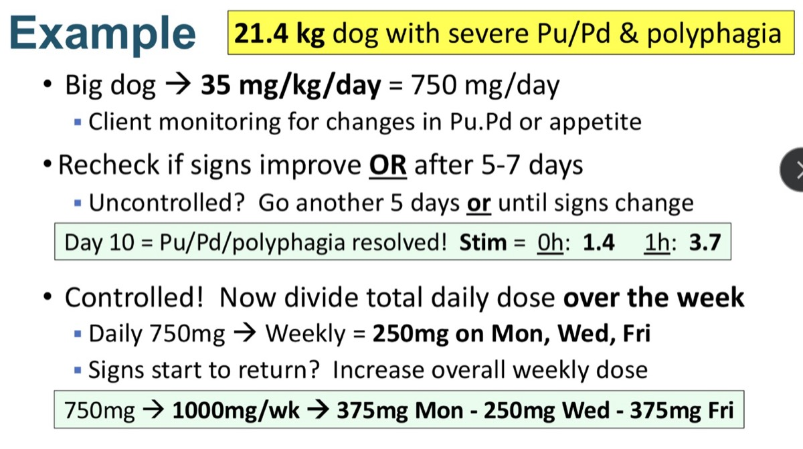
- 誘導：大型犬劑量 35 mg/kg/day × 21.4 kg ≈ 750 mg/天。飼主在家觀察飲水、尿量和食慾。
- 回診：症狀改善時，或 5–7 天後。還沒控制就再給 5 天，或給到症狀改變。
- 第 10 天：PU/PD 和多食都消失。刺激試驗 0 小時 1.4、1 小時 3.7 µg/dL，確認控制。
- 維持：一天 750 mg 改成每週 750 mg，週一、三、五各 250 mg。🎤 怎麼分沒有科學根據，選錠劑好切、飼主好記的方式；講者喜歡一三五，飼主比較能持續。
- 復發：PU/PD 又出現，就提高每週總量，750 → 1000 mg/週：週一 375、週三 250、週五 375 mg。🎤 也可以週一、週四各 500 mg，重點是每週總量和給藥頻率一致。
💡 補充 換算與提醒
- Lysodren 是 500 mg 可切錠，所以劑量會湊成 250 或 125 的倍數。
- 750 mg/週 ≈ 35 mg/kg/週，比講義寫的維持劑量 50–75 還低，算是保守起步；1000 mg/週 ≈ 47 mg/kg/週。
- 飼主發現食慾下降要立刻停藥回診；可備少量 prednisolone 應急。隨餐（含油脂）給可增加吸收。
- 給太多可能造成永久性 Addison（見第 6 節）。
🎤 結論：可靠且有效，但屬仿單外使用，是無法耐受 trilostane 的狗的好選擇。
11. 垂體切除術（Hypophysectomy）
▾🎤 根治性療法與條件
- 手術移除垂體，是庫欣的根治性療法。
- 需要：
- 技術極好的神經外科醫師。🎤 在病患嘴裡一個很小的洞裡操作，需要大量時間和練習。
- 24/7 加護能力。
- 神經科、急重症、內科醫師和護理師組成的團隊。
- 最危險的時期：
- 圍手術期：死亡率 8–15%。🎤 最擔心的是出血。
- 術後 4–7 天：🎤 重點在水分與電解質平衡，因為垂體和它分泌的荷爾蒙都被拿掉了。
- Texas A&M 費用：小腫瘤約 15,000–18,000 美元；🎤 大腺瘤平均約 25,000 美元。有飼主從世界各地飛來做這個手術。
🎤 手術方式（照片與影片）
- 經蝶竇入路：從口腔、穿過軟顎，在垂體窩的高度進入顱底，鑽開垂體窩底部。
- 🎤 投影片上是一隻貓，是他們開過最大的腫瘤，正常腦組織被擠到顱腔前方。整天的手術，術後竟然恢復得不錯；術前／術後影像可以看到腫瘤原本的位置變成空腔。
- 腫瘤暴露後，神經外科醫師基本上就是把它「挖出來」。
- 不可能 100% 移除，至少會留下顯微病灶，這和之後的復發有關。
- 手術時間：🎤 小腫瘤通常 5–6 小時；大腫瘤可能 8–12 小時。
🎤 術後照護
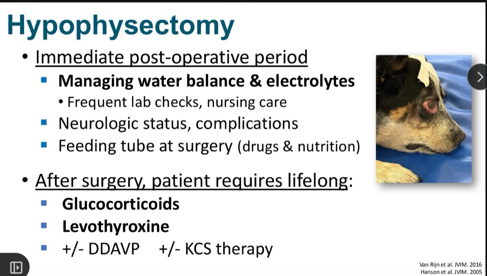
術後立即期
- 管理水分平衡與電解質：頻繁驗血、護理。🎤 拿掉垂體會造成很嚴重的紊亂，需要頻繁調整輸液和電解質，有專職的急重症團隊可以減輕內科住院醫師的負擔。
- 神經狀態與併發症。
- 手術時就放餵食管（給藥和營養）。
術後需要的補充
| 補充 | 原因 | 多少比例要終身 |
|---|---|---|
| 糖皮質素 | 沒有 ACTH | 全部 |
| Levothyroxine | 沒有 TSH（次發性甲狀腺功能低下） | 全部 |
| DDAVP | 中樞性尿崩症 | 🎤 術後全部都會開始；約 60% 需要終身 |
| 乾眼症治療 | 淚腺和瞼板腺的神經受損 | 🎤 30–45% 術後發生；略少於一半需要長期治療 |
✍️ 筆記 30–45% 可能會造成乾眼症
- 🎤 原因是手術區域會傷到淚腺和瞼板腺的神經支配。
- 💡 補充 經蝶竇入路靠近翼腭窩，控制淚腺分泌的副交感神經（顏面神經 → 大岩神經 → 翼腭神經節 → 淚腺）經過這裡。
- 💡 補充 實務做法：
- 術前先做 Schirmer 淚液試驗建立基準，術後定期追蹤。
- 淚液下降：人工淚液、cyclosporine 或 tacrolimus 眼藥；神經性乾眼可考慮 pilocarpine。
- 術前就告知飼主：除了終身吃藥，可能還要每天點眼藥。
- 💡 補充 為什麼不用補礦物皮質素？Aldosterone 主要受 RAAS 和血鉀調控，不靠 ACTH，球狀帶還能自己分泌。
🎤 一定要主動告知飼主
做法：提出這個選項；飼主拒絕就寫進病歷，以後他們不高興時，你有紀錄可以依靠。
| 預後 | 數字 |
|---|---|
| 1 年存活率 | 84–91% |
| 4 年存活率 | 68–72% |
| 復發 | 約 23–27%，通常在術後 18 個月以後 |
- 🎤 這些通常是老狗，等到出現復發症狀時，可能已經接近壽命的尾聲。
- 復發風險較高：術前基礎 UCCR 較高；垂體/腦比（P:B ratio）較高（Tardo 講過，見 12）。
- 腫瘤越大，預後越差：大腺瘤更貴，術後併發症也更多。
12. 垂體放射治療
▾🎤 是治療大腫瘤，不是治療庫欣
- 只有約 20%（1/5）的狗 ACTH 分泌會下降，而且可能放療後好幾個月才看得到。
- 大多數仍需要長期吃 trilostane。
- 用途：大腺瘤造成中樞神經症狀時，用來縮小腫瘤；放療後數個月腫瘤可能還在持續縮小。
13. 類固醇合成阻斷劑
▾🎤 合成路徑與各藥作用點
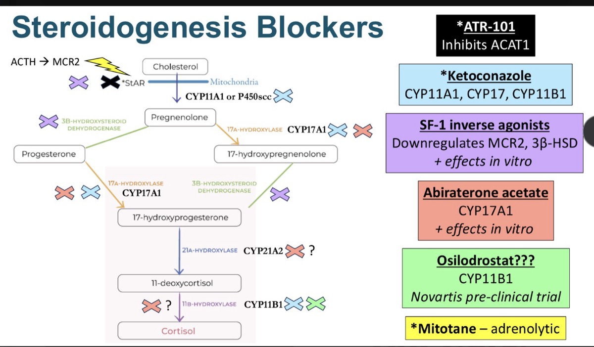
路徑：膽固醇 →（StAR 運進粒線體，限速步驟）→ CYP11A1 → 孕烯醇酮 →（3β-HSD／CYP17A1）→ 17-OH 黃體素 → CYP21A2 → 11-去氧皮質醇 → CYP11B1 → 皮質醇。最上游是 ACTH 結合 MC2R 啟動整條路徑。
| 顏色 | 藥物 | 作用點 | 證據 |
|---|---|---|---|
| ⬛ | ATR-101* | 抑制 ACAT1，斷掉膽固醇原料庫 | 犬小型研究 |
| 🟦 | Ketoconazole* | CYP11A1、CYP17、CYP11B1 | 犬有使用，效果不穩 |
| 🟪 | SF-1 反向促效劑 | 下調 MC2R 和 3β-HSD | 體外實驗 |
| 🟥 | Abiraterone | CYP17A1（CYP21A2、CYP11B1 打問號） | 體外實驗 |
| 🟩 | Osilodrostat | CYP11B1 | Novartis 臨床前試驗 |
| — | Mitotane* | 溶解腎上腺皮質 | 長期使用經驗 |
| （圖上沒畫） | Trilostane | 3β-HSD（紫色 ✕ 的位置） | 標準治療 |
💡 補充 卡在哪一步很重要
- 越上游（StAR、CYP11A1）：連 aldosterone 和性荷爾蒙一起擋，較容易礦物皮質素不足。
- 越下游（CYP11B1）：選擇性高，但前驅物（11-去氧皮質固酮等）堆積，在人會造成高血壓、低血鉀。
- CYP17A1（abiraterone）：路徑被推向礦物皮質素那一側，人類同樣有高血壓、低血鉀。
- Trilostane 擋 3β-HSD 後前驅物堆積，也可能是第 7 節「刺激試驗和症狀對不起來」的原因之一。
🎤 ATR-101
- ACAT1 選擇性抑制劑。ACAT1 把細胞內游離膽固醇酯化成膽固醇酯，膽固醇酯是腎上腺皮質合成荷爾蒙的原料庫。
- 抑制後膽固醇酯減少、游離膽固醇堆積，皮質細胞凋亡死亡。
- 研究：10 隻庫欣犬（7 隻 PDH、3 隻 ADH）。3 mg/kg SID 7 天，再 30 mg/kg SID 7 或 21 天。
- 結果：
- 刺激後皮質醇：9/10 下降，平均下降 50% ± 17%。
- 臨床症狀：7 隻改善、2 隻不變、1 隻惡化。
- 副作用：220 天內 4 次嘔吐、1 次腹瀉；ALT 上升、HCT 和白蛋白輕微下降，🎤 不一定需要停藥。
- 🎤 結論：值得進一步研究。
🎤 Ketoconazole
- 抗黴菌藥，抑制 P450scc、CYP17A1、CYP11B1。
- 劑量：5 mg/kg q12h 7 天，之後 12–15 mg/kg q12h。報告中成功率最高的是 5–25 mg/kg q12h（中位數 12.5）。
- 71% 的 ACVIM／ACVD 專科醫師認為超過一半的病例無效。
- 療效：
- 臨床改善 50–90%，🎤 多數研究平均約 75%。
- 刺激後皮質醇 < 10 µg/dL 約 69%。🎤 但目標是約 5，< 10 不代表臨床控制良好。
- 副作用：ketoconazole 約 70%，trilostane 約 0–18%。厭食、嘔吐、腹瀉；> 7.5 mg/kg q12h 時 ALT 可逆性上升。🎤 劑量越高副作用越多。
多數人不認為它是好的長期選項。
🎤 Carbenoxolone
- 11β-HSD 抑制劑（負責皮質醇與 cortisone 轉換的酵素）。
- ACTH 依賴型庫欣犬，60–80 mg/kg/天，6 週：基礎與刺激後皮質醇下降，但仍高於健康犬，PU/PD 持續。
- 全部改用 trilostane 後，全部達到控制與臨床緩解。🎤 沒有比 trilostane 好。
14. ACTH 阻斷劑：垂體腫瘤的受體
▾🎤 腫瘤位置與受體表現
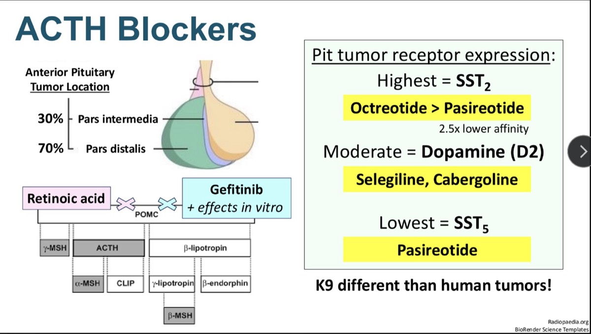
- 腫瘤位置：前葉遠側部（pars distalis）約 70%，中間部（pars intermedia）約 30%。🎤 位置不同，荷爾蒙濃度和藥效也可能不同。
| 犬 ACTH 腫瘤 | 人 ACTH 腫瘤 | |
|---|---|---|
| 受體表現 | SST2 最高 > 多巴胺 D2（中等）> SST5 最低 | SST5 最高 |
| 理論上較對症的藥 | Octreotide（SST2） | Pasireotide（SST5） |
| 實際情況 | 🎤 理論上 octreotide 應該比較好，結果並不是（第 17 節） | Pasireotide 已核准 |
💡 補充 人類高皮質醇會下調促腎上腺皮質素細胞的 SST2，所以人的腫瘤主要剩 SST5。
- D2 中等表現：對應 selegiline、cabergoline。
- 視黃酸、Gefitinib（體外有效）：阻斷 POMC 轉錄。POMC 是 ACTH 的前驅物（也會切出 α-MSH、β-endorphin 等），擋住轉錄就能降低 ACTH。
15. Selegiline 與 Cabergoline（多巴胺作用）
▾🎤 Selegiline
- 多巴胺促效作用 + 不可逆 MAO-B 抑制劑。提高中樞多巴胺，降低 ACTH；對中間部腫瘤效果最好（約 30% 的犬腫瘤）。🎤 可惜生前沒有好方法知道腫瘤長在哪一部。
- 單獨使用 1–2 mg/kg q24h：75–100% 無效。
- 🎤 早期研究中多數飼主覺得狗變好了，推測是代謝產物 amphetamine（和 phenylethylamine）讓狗看起來更有精神，「是假象」，不是真的治療了庫欣。
- Selegiline 1 mg/kg SID + trilostane 0.5 mg/kg BID（n=15）：
- 臨床和皮質醇控制與單用 trilostane 相近。
- 沒有出現 trilostane 相關的腎上腺變大，但內生性 ACTH 沒有差異，原因不明。
- 6 個月時三酸甘油酯較低（144 vs 295）。🎤 但升高本來就不嚴重，臨床意義不明。
🎤 Cabergoline
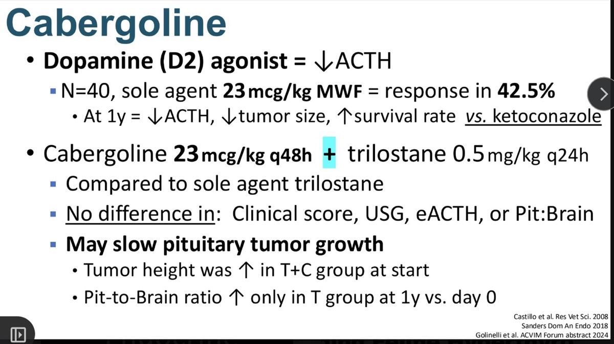
單獨使用（Castillo 2008）
- 40 隻庫欣犬，23 mcg/kg 每週一、三、五。🎤 這些是小腺瘤的狗。
- 42.5% 有反應。1 年時，和 ketoconazole 相比：ACTH 下降、腫瘤縮小、存活率較高。
合併 trilostane（Golinelli，ACVIM 2024 摘要）
- Cabergoline 23 mcg/kg q48h + trilostane 0.5 mg/kg q24h，對照單用 trilostane。
- 臨床評分、USG、內生性 ACTH、P:B ratio 都沒有差異。
- 可能減緩垂體腫瘤生長：合併組一開始腫瘤就比較高；1 年時只有單用 trilostane 組的 P:B ratio 比第 0 天高。🎤 講者認為 P:B ratio 是比較重要的預後指標。
- 🎤 適合擔心腫瘤長大的狗：trilostane 解除負回饋、內生性 ACTH 上升，可能刺激腫瘤；加上 cabergoline 試著抵消。
- 🎤 有報告對大腺瘤改成 23 mcg/kg 每天給，更積極地壓制腫瘤。
💡 補充 解讀與實務
- 單獨使用的對照組是 ketoconazole（本身就不好），「比 ketoconazole 好」說服力有限。
- 合併研究是摘要、未經同儕審查；兩組基準不一致，「沒長大」可能部分是均值回歸。
- 劑量很小：10 kg 狗 = 0.23 mg，人用 0.5 mg 錠不好分，常需調劑；歐洲有獸醫用口服液（Galastop®，50 mcg/mL）。
- 副作用：嘔吐、食慾差、精神差，隨餐給可減輕。會抑制泌乳素，懷孕犬禁用。
16. 視黃酸（Retinoic Acid）
▾🎤 機轉與犬的研究
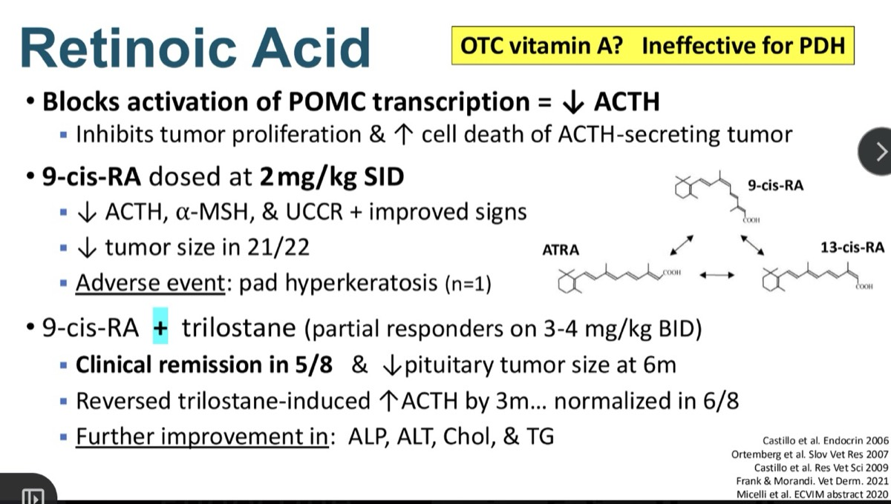
🎤 講者認為這是從人醫來的、比較令人期待的替代療法之一。
- 阻斷 POMC 轉錄 → ACTH 下降；同時抑制腫瘤增生、增加分泌 ACTH 的腫瘤細胞死亡。
- 9-cis-RA 2 mg/kg SID：
- ACTH、α-MSH、UCCR 下降，症狀改善。
- 22 隻中 21 隻腫瘤縮小。
- 唯一副作用：1 隻腳墊角化過度。
- 9-cis-RA + trilostane（用 3–4 mg/kg BID 仍只部分反應的狗）：
- 8 隻中 5 隻臨床緩解，6 個月時垂體腫瘤縮小。
- 3 個月內逆轉 trilostane 造成的 ACTH 上升，6/8 恢復正常。
- ALP、ALT、膽固醇、三酸甘油酯進一步改善。
🎤 取得與費用：9-cis vs 13-cis
| 9-cis-RA（alitretinoin） | 13-cis-RA（isotretinoin, Accutane®） | |
|---|---|---|
| 取得 | Toctino®、Hanzema®；美國買不到，網路藥局很貴 | 美國常用的痤瘡藥，容易取得 |
| 價格（30 顆） | 約 768 美元 | 約 43 美元 |
| 犬的經驗 | 上述庫欣研究 | 1–3 mg/kg/day，用於皮膚、腫瘤適應症；尚無庫欣研究 |
| 副作用 | 約 25%：三酸甘油酯／膽固醇上升、ALT／ALP／總膽紅素上升、乾眼症、強烈致畸胎 |
- 🎤 人類庫欣病人用 13-cis-RA 加 cabergoline：視黃酸提高促腎上腺皮質素細胞對多巴胺促效劑的敏感度，合併效果比單用任一種都好。
- 🎤 期待在庫欣犬身上也能藉此提高 cabergoline 的效果。
- 🎤 有繁殖用途或未絕育的動物不建議使用。
✍️ 筆記 老師：比較新的人醫研究支持，可以考慮
- 講義右側的結構圖畫出 9-cis、13-cis、ATRA 三種異構物之間的雙向箭頭：它們在體內可以互相轉換。這是「用便宜的 13-cis 取代 9-cis」的依據。
- 人類 Cushing's disease 有小型研究用 isotretinoin，部分病人尿游離皮質醇下降或恢復正常；合併 cabergoline 更好。（病例數與結果依記憶整理，未核對原文）
💡 補充 在狗用 13-cis-RA 要注意
- 屬 off-label 嘗試，要充分告知飼主。
- 開始前及每 1–3 個月：血脂（庫欣犬本來就高）、肝指數、Schirmer 淚液試驗，配合 ACTH 或皮質醇追蹤療效。
- 家中有孕婦或可能懷孕的人不可徒手接觸藥物。
- 適合考慮：trilostane 高劑量仍部分反應、擔心腫瘤長大但不考慮手術或放療、想「垂體＋腎上腺」雙管齊下（13-cis-RA ± cabergoline + trilostane）。
17. 體抑素類似物
▾🎤 Pasireotide 與 Octreotide
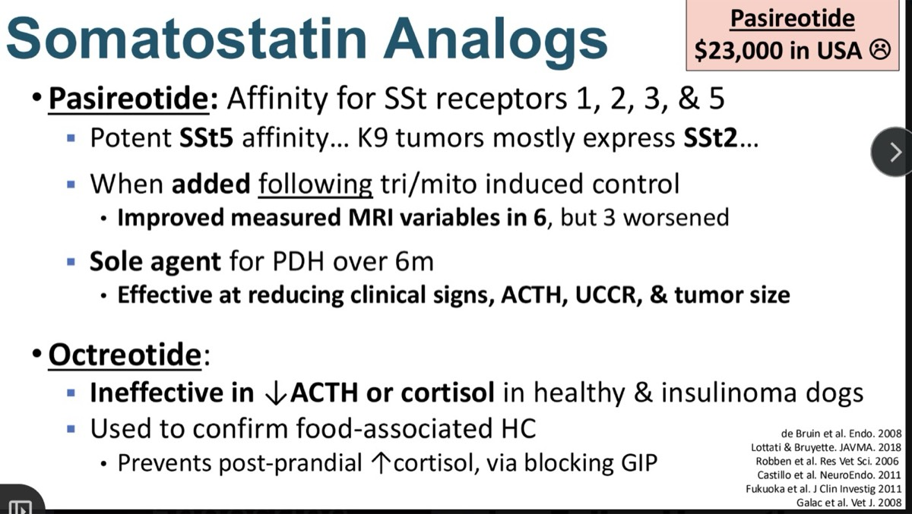
Pasireotide
- 結合 SST 1、2、3、5，對 SST5 親和力最強；狗的腫瘤主要表現 SST2。🎤 雖然對「不是主要表現」的受體親和力較高，在狗身上反而比 octreotide 有效。
- 在 trilostane 或 mitotane 達到控制後加上去：6 隻 MRI 指標改善（腫瘤縮小），3 隻腫瘤變大。
- 單獨治療 PDH 6 個月：臨床症狀、ACTH、UCCR、腫瘤大小都下降。
- 🎤 美國只有一家廠商，不論劑量都賣 23,000 美元。有一位飼主真的買了，用在一隻狗身上，看到正面的臨床效果。劑量：0.03 mg/kg q12h。
Octreotide
- 在健康犬和胰島素瘤犬身上，降低 ACTH 或皮質醇都無效。🎤 但這些研究不是在庫欣犬身上做的。
- 真正的用途：確認食物依賴型 HC，阻斷 GIP，防止餐後皮質醇上升（見第 2 節）。
| Pasireotide | Octreotide | |
|---|---|---|
| 主要受體 | SST5（也結合 1、2、3） | SST2 |
| 理論匹配度（狗） | 較差 | 較好 |
| 實際降 ACTH／皮質醇 | 有效 | 無效（非庫欣犬） |
| 縮小腫瘤 | 有，個體差異大 | 無資料 |
| 主要用途 | 研究性治療 | 診斷食物依賴型 HC |
💡 補充 人醫經驗：pasireotide 常造成高血糖（SST5 抑制胰島素與腸泌素），也可能造成膽結石（抑制膽囊收縮）。庫欣犬本來就有約 10% 糖尿病、約 20% 膽囊黏液囊腫，用之前要考慮。
18. 腸–腦軸與菌叢失衡
▾🎤 HPA 軸與腸道菌叢互相影響
- 慢性皮質醇過多或壓力：皮質醇進入循環 → 經腸肝循環進入消化道 → 腸道與微生物暴露在皮質醇中 → 再回到血液 → 代謝物出現在糞便。
- 微生物群調節 HPA 軸，HPA 軸也調節微生物群。影響營養可利用性、膽酸代謝、短鏈脂肪酸（SCFA）生成和神經傳導物質。
- 🎤 庫欣犬的菌叢改變，可能也會影響 trilostane 的反應和控制。
🎤 庫欣造成的菌叢失衡
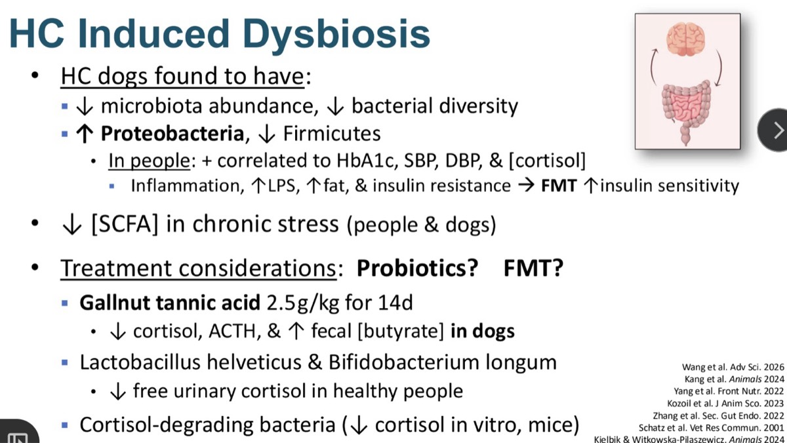
- 庫欣犬：菌量減少、多樣性下降；變形菌門（Proteobacteria）增加、厚壁菌門（Firmicutes）減少。
- 人類：這些變化和 HbA1c、收縮壓、舒張壓、皮質醇正相關；伴隨發炎、LPS 上升、脂肪增加、胰島素阻抗。糞便移植（FMT）可提高胰島素敏感性。
- 慢性壓力下 SCFA 下降（人和狗），🎤 會影響腸道上皮細胞健康。
💡 補充 變形菌門含 LPS（內毒素），常被當成發炎、失衡的指標；厚壁菌門包含很多產丁酸菌。人類的相關性正好對到庫欣的共病：糖尿病、高血壓。
可能的治療方向：益生菌？FMT？
| 方法 | 結果 | 證據 |
|---|---|---|
| 五倍子單寧酸，14 天 | 皮質醇、ACTH 下降，糞便丁酸上升；🎤 好菌增加 | 犬 |
| Lactobacillus helveticus + Bifidobacterium longum | 尿游離皮質醇下降 | 健康人 |
| 可分解皮質醇的細菌 | 皮質醇下降；🎤 中樞神經發炎指標也下降 | 體外、小鼠 |
- 🎤 小鼠研究使用含類 desmolase 酵素的益生菌，專門在腸道中分解皮質醇。之後人和伴侶動物的研究可能會往這個方向發展。
- 💡 補充 已知例子如 Clostridium scindens，能切掉皮質醇側鏈、轉成雄性素類代謝物。
- 💡 補充 目前屬輔助、研究性質，不能取代 trilostane。益生菌安全性高，對合併腸胃症狀或胰島素阻抗的狗可當輔助嘗試，選有標示菌株、有實證的產品。
Take-home、更正表與參考資料
▾🎤 總結
- Trilostane 是治療主力。反應不佳時，現在有一些替代或合併療法，未來可能還會更多。
- 🎤 要和飼主討論垂體切除術等根治性療法，你永遠不知道誰會接受。
- 臨床症狀是最重要的監測工具，應主導大部分決策；給藥前皮質醇或 ACTH 刺激試驗作為輔助。
- 別忘了處理持續存在的共病，尤其是診斷時沒有處理的。
💡 補充 替代療法一覽
| 治療 | 定位 | 縮小腫瘤 | 實用性 |
|---|---|---|---|
| Mitotane | 無法耐受 trilostane | — | 可用，需密切監測 |
| 垂體切除術 | 根治 | 移除 | 費用高、需專業團隊；要主動告知 |
| 放射治療 | 大腺瘤的神經症狀 | ✔ | 不能治庫欣 |
| ATR-101 | 研究中 | — | 尚不可得 |
| Ketoconazole | 不建議長期 | — | 副作用約 70% |
| Selegiline | 合併 trilostane | — | 單用無效 |
| Cabergoline | 合併 trilostane，擔心腫瘤長大 | 可能減緩 | 可取得，劑量小 |
| 視黃酸 | 部分反應者合併 | ✔（9-cis） | 9-cis 難取得；13-cis off-label |
| Pasireotide | 研究性 | ✔（不一定） | 約 23,000 美元 |
| 益生菌／菌叢 | 輔助 | — | 證據有限 |
【更正】 逐字稿轉文字錯誤對照
| 逐字稿 | 應為 |
|---|---|
| prednisone is our mainstay of treatment | trilostane |
| triostatin / triamcinolone / triptane / trial stain / triolestan / triastate / tryptane / tamoxifen | trilostane |
| betadrol | Vetoryl |
| Dr. Carter / Dr. Tarter / Dr. Tardos / Dr. Harvey | Dr. Tardo（上一場） |
| cushionoid / cushyoid / fishoid / fistuloid / Cushionway / pushings / machines | cushingoid／Cushing's |
| hypercoarsalism / hypercornizolism / hypercholism | hypercortisolism |
| hypocalcemia / hypoparathyroidism（監測段落） | hypocortisolemia |
| Wilcock | Woolcock（2016） |
| free bio cortisol | pre-pill cortisol（給藥前皮質醇） |
| EUPD / PPD / PUD and polyneuropathy | PU/PD／PU/PD and polyphagia |
| insides（trilostane 和 ACEi/ARB 要當成…） | NSAIDs |
| preventative for the development of Cushing's | 預防庫欣犬發生糖尿病（metformin） |
| gallbladder fistula | gallbladder mucocele |
| myotane / mitotin / mydaltin | mitotane |
| polyphasia | polyphagia（多食） |
| day ten on maintenance therapy | 誘導期第 10 天 |
| petroclival fossa / transcranial approach / sphenoid fossa | 經蝶竇入路（transsphenoidal）至垂體窩 |
| hypoparathyroidism（手術段落） | hypophysectomy |
| calf tumor | cat tumor（那隻貓） |
| DDADP / DDVP | DDAVP |
| nasal urine cortisol to creatinine ratio | basal UCCR |
| increased risk of surgery | increased risk of recurrence（復發） |
| osloosstat / Navarreus | osilodrostat／Novartis |
| ATR one and one / ACP one | ATR-101／ACAT1 |
| esterification of free cortisol（ATR-101） | free cholesterol |
| three mix for K / 30 mix for K | 3 mg/kg／30 mg/kg |
| clinical signs improved in 70% | 7 隻（共 10 隻） |
| require or consider this a good long-term option | do not consider（不認為是好的長期選項） |
| Carbonoloxone 60 to 80 mcg per day | carbenoxolone 60–80 mg/kg/天 |
| oxytide / serotide / zero type / sirolimus | octreotide／pasireotide |
| selective norbupergoline | selegiline 和 cabergoline |
| divinyl / PONC | gefitinib／POMC |
| Salenazine / sulidgine / sledge lean | selegiline |
| 1 to 2 mcg once daily（selegiline） | 1–2 mg/kg q24h |
| triptan at a half mcg per kg | trilostane 0.5 mg/kg q24h |
| retinol acetate / nicotinomic acid | retinoic acid／9-cis retinoic acid |
| tumor-dependent disease | pituitary-dependent（PDH） |
| cartilaginous cells | corticotroph cells（分泌 ACTH 的細胞） |
| reduce tumor volume, creatinine ratios | ACTH、α-MSH 和 UCCR 下降 |
| adrenocortical ACTH | endogenous ACTH |
| one to three micrograms per day | 1–3 mg/kg/day |
| dermatologic or ophthalmologic indications | 講義為皮膚、腫瘤適應症 |
| ACS | KCS（乾眼症） |
| carbamazepine / acupent | cabergoline／Accutane |
| metastat analogs / enplinoma | somatostatin analogs／insulinoma |
| Crohn's disease patients | Cushing's patients |
| Galactanic acid | gallnut tannic acid（五倍子單寧酸） |
| desmolyase | desmolase |
| prednisolone or ACTH stimulation tests（總結） | pre-pill cortisol or ACTH stimulation |
| suppurative conditions | comorbidities（共病） |